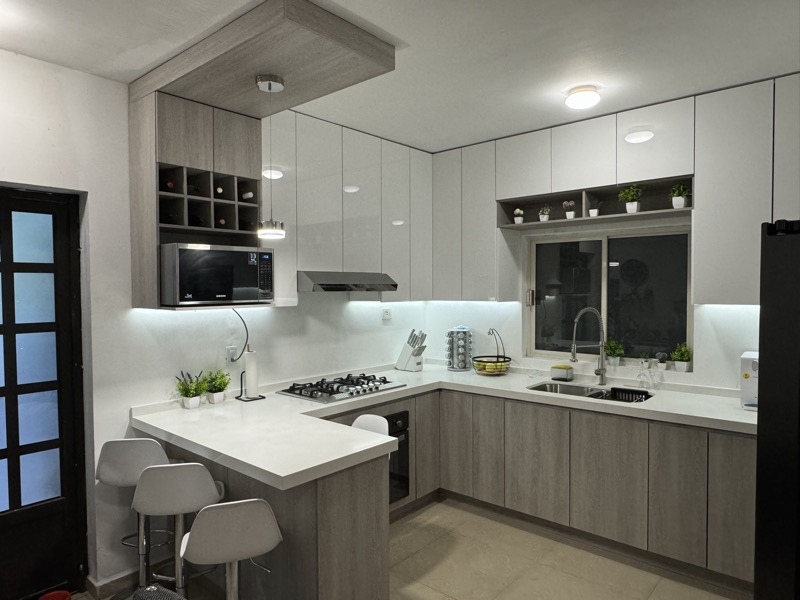

Guadalupe · Nuevo León
Cocinas Integrales en Guadalupe, NL — Showroom en Linda Vista
Diseño 3D personalizado, fabricación propia y entrega en 4 a 6 semanas. Más de 300 cocinas entregadas y 4.4★ en Google.
Servicio local
Cocinas integrales hechas a la medida en tu municipio
Guadalupe es uno de los municipios más grandes del área metropolitana de Monterrey, con cerca de 675 mil habitantes y miles de viviendas residenciales construidas entre los años 80 y 2000. Muchas de esas casas tienen cocinas chicas, gabinetes de fórmica deteriorados, muros divisorios innecesarios y distribuciones que ya no responden a cómo vive una familia hoy. Una cocina integral hecha a medida resuelve todos esos problemas de raíz.
Ventaja de tenernos en tu municipio: nuestro showroom está dentro de Guadalupe, en Linda Vista (C. Tauro 206). Eso significa que la visita técnica se agenda en 24 a 48 horas, los traslados de instalación no se cargan al cliente, y cualquier ajuste post-instalación se atiende rápido. No tenemos que "mandar a un equipo" desde Monterrey o San Pedro.
Tipos de proyecto que más nos piden en Guadalupe
El proyecto más común es la remodelación completa de cocina vieja: demolemos los gabinetes existentes, ajustamos plomería y gas si es necesario, instalamos cubierta nueva en cuarzo o granito y entregamos una cocina integral nueva en MDF con melamina, con almacenamiento optimizado. También hacemos cocinas de obra nueva para casas en construcción y islas y barras desayunadoras para cocinas que tienen el espacio.
Colonias donde tenemos experiencia
Trabajamos en proyectos residenciales de todo el municipio: desde casas tradicionales en Linda Vista, Contry y Las Cumbres de Guadalupe, hasta fraccionamientos como Real Cumbres, Hacienda San Miguel y Villas de la Hacienda. También en zonas como Parques de Guadalupe, La Estanzuela, Misión de la Silla, Camino Real, Jardines de la Silla y residenciales del oriente. Cada zona tiene su perfil — casas de 1 o 2 plantas, cocinas tipo "L", "U" o lineales — y adaptamos el diseño al espacio real.
Proyectos recientes
Dos cocinas entregadas en colonias de Guadalupe
Parques de Guadalupe
Casa familiar
6 semanas
Remodelación completa
Cocina para reuniones y vida familiar en Parques de Guadalupe
Parques de Guadalupe · Diciembre 2023
El cliente nos pidió aprovechar al máximo el espacio y armar una cocina presentable para reuniones — un lugar donde su familia y amigos pudieran convivir y disfrutar. El resultado: una cocina llena de luz, amplitud, modernidad y elegancia, donde cada cara de sorpresa al entrar nos confirmó que la transformación valió cada detalle. Pasamos de un espacio desorganizado a una cocina completamente nueva.
Materiales
MDF con melamina
MDF alto brillo
Cubierta de cuarzo
Tarja en acero inoxidable
Misión de la Silla
Casa familiar
4 semanas
Cocina a medida
Cocina con balance entre almacenamiento y diseño en Misión de la Silla
Misión de la Silla · Julio 2024
El reto principal fue aprovechar al máximo cada centímetro para lograr un balance entre almacenamiento y diseño. Seleccionamos materiales resistentes — tan duraderos que hasta las mascotas los disfrutan — y un layout que prioriza orden, luminosidad y funcionalidad para el día a día de una familia activa.